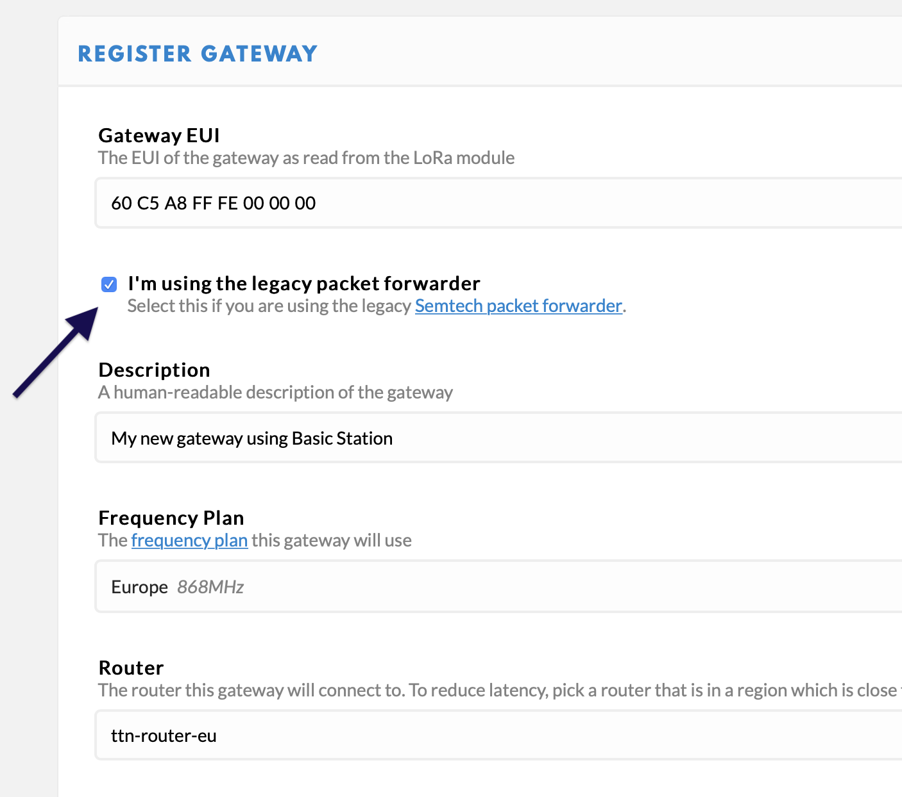

LoRa Basics Station #
TTN supports the LoRa Basics Station LNS protocol. LNS establishes a data connection between Basics Station and TTN, and is preferred over the legacy UDP Packet Forwarder.
Some of the advantages of Basics Station over the legacy UDP Packet Forwarder are:
- Centralized Update and Configuration Management
- TLS and Token-based Authentication
- Centralized Channel-Plan Management
- No Dependency on Local Time Keeping
Connecting Your Device #
To connect your device, use the following settings:
- Server Address:
wss://lns.{eu|us|in|au}.thethings.network:443 - Server Certificate: see the certificates section
Check the I’m using the legacy packet forwarder button when registering your gateway in the console.

NOTE: This is not the legacy packet forwarder, but internally this setting is correct.